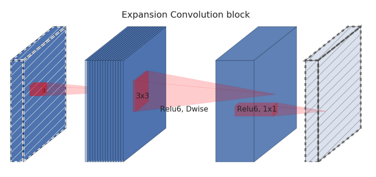
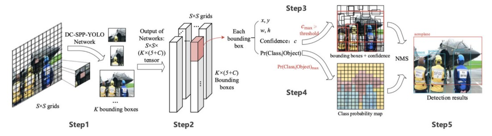
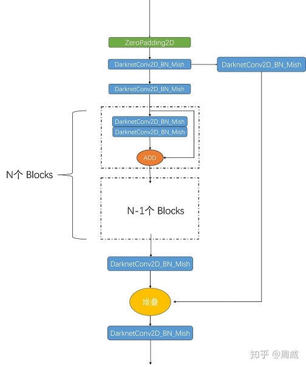

本文主要记录了关于 yolo v4 的内容。
0. 序言
Yolo v4 论文主要由 目标检测网络构成，Bag of freebies, Bag of specials 这三部分组成。
作者首先详细列举了目前已有的目标检测网络构成部件，以及已有的 Bag of freebies, Bag of specials, 然后分别从这三大部分中选取合适的内容，组成了 Yolo v4.
列举的三大部分如下面三张图

1. YOLO v4 的选择
YOLO v4 对各个部分的选择如下图所示
2. 各部分详细解读
2.1 Backbone
2.1.1 DenseNet
Transition layer 由 的卷积和 pooling 组成，分别用来降低通道数和空间尺寸。
2.1.2 Cross-Stage-Partial-connections (CSP)
CSP 可以用在不同的网络上，下面的图展示了在 DenseNet 上使用 CSP 的结构。
CSPNet 将输入分成两部分 (沿通道分开)，一部分经过 DenseBlock 的处理，另一部分直接跳过处理，输入最后的输出层。
2.1.3 CSPDarknet53
YOLO v4 使用 Darknet53 + CSP 连接组成的 CSPDarknet53 作为 backbone.

2.2 Neck
2.2.1 Feature Pyramid Networks (FPN)

2.2.2 SPP (spatial pyramid pooling layer)
2.2.3 YOLO with SPP
YOLO 中的 SPP 和本来的作用有点不一样，YOLO 中的 SPP 使用不同的 pooling 层对输入进行池化，但是不改变空间尺寸。然后不同 pooling 层得到的结果和原始的输入都 concatenate 在一起。
2.2.4 Path Aggregation Network (PAN)
下图是目标检测的 Path Aggregation Network(PAN)。 自底向上的路径 (b) 被扩展，使低层信息更容易传播到顶层。 在 FPN 中，局部空间信息在红色箭头中向上传递。 虽然在图中没有清楚地显示，但是红色的路径穿过了大约 100 多层。 PAN 引入了一条简捷的路径(绿色路径) ，只需要大约 10 层就可以到达顶层 。 这种短路概念使细粒度的本地化信息可用于顶层。
不过在 YOLOv4 中，特征图不是加上邻居层，而是 concate 在一起。
2.2.5 Spatial Attention Module (SAM)
注意力 (Attention) 在 DL 设计中有着广泛的应用。 在 SAM 中，最大池化和平均池化分别应用于输入特征图，生成两组特征图。 这些结果被输入到一个卷积层，然后经过 sigmoid 函数，以产生空间注意力。
对应 空间注意力模块 (SAM)，也有 通道注意力模块 (CAM)
在 YOLOv4 中，使用了一个修改的 SAM，没有应用最大和平均池化。
在 YOLO v4 中，FPN 概念逐渐被修改版的 SPP和 PAN 实现/取代。
2.3 Bag of Freebies (BoF) for backbone
YOLOv4 backbone 的 BoF 特性包括:
- CutMix 和 Mosaic 数据增强
- DropBlock 正则化
- 类别标签平滑
2.3.1 CutMix 数据增强
Cutout 数据增强删除图像的一个区域(见下图)。 这迫使模型在进行分类时不要对特定特性过于自信。 然而这样的话，图像的一部分充满了没用的信息，这是一种浪费。 在 CutMix 中，图像的一部分被剪切并粘贴到另一个图像上。 Ground truth 标签会根据补丁的面积按比例重新调整，例如 0.6 像狗，0.4 像猫。
从概念上讲，CutMix 对于一个对象可能由什么组成有更广阔的视野。 CutOut 区域迫使模型学习目标分类的不同特征集合。 这样可以避免过度自信。 由于该区域被替换为另一个图像，图像中的信息量和训练效率也不会受到显著影响。
2.3.2 Mosaic 数据增强
Mosaic 是一种数据增强方法，组合了 4 个训练图像到一个训练图像中(而不是 CutMix 中的2个)。 这增强了对其正常 context 之外的对象的检测。 此外，每个 mini-batch 都包含更大数量的图像 (4x)，因此减少了估计均值和方差时对大的 mini-batch 的需求。

2.3.3 DropBlock 正则化
在全连接层中，我们可以应用 dropout 强制模型从各种特征中学习，而不是对一些特征过于自信。然而这可能对卷积层无效。相邻位置是高度相关的。所以即使有些像素被去掉了(下面的中图) ，空间信息仍然可以被检测到。 DropBlock 正则化基于一个类似的概念，但适用于卷积层。
大小的块被整块删除，而不是删掉单独的像素。
2.3.4 类别标签平滑(Class label smoothing)
每当你觉得自己绝对正确的时候，你很可能是错的。 100% 相信一个预测可能会显示出这个模型是在记忆数据而不是在学习。 标签平滑将预测的目标上限调整为一个较低的值，比如 0.9。 它将使用这个值而不是 1.0 来计算损失。 这个概念减轻了 overfitting 问题。
1 | p = tf.placeholder(tf.float32, shape=[None, 10]) |
2.4 Bag of Specials (BoS) for backbone
YOLOv4 backbone 的 BoS 特性包括:
- Mish 激活
- Cross-stage partial connections (CSP)
- Multi-input weighted residual connections (MiWRC)
2.4.1 Mish 激活
下面这个新的激活函数，称为 Swish，表现出比 ReLU 和很多其它激活函数更好的性能。
Mish 是另一个与 ReLU 和 Swish 非常相似的激活函数。 正如论文所宣称的，Mish 在很多深层网络不同数据集的表现都优于它们。
关于激活函数的详细内容，请看这篇文章 激活函数详解
2.4.2 Multi-input weighted residual connections (MiWRC)
讲了 EfficientDet 中的逆残差块 (inverted residual block)
在许多 ML 和 DL 问题中，我们学习输入的低维表示。 我们通过创建“信息”瓶颈 (bottleneck) 来提取数据的核心信息。 这迫使我们去发现最重要的信息，这是学习的核心原则。 根据这一原则，一个逆残差块以一个低维表示作为输入，并通过卷积(线性运算)和非线性运算对其进行操作。 但是像 ReLU 这样的非线性部分存在一个主要问题。非线性操作不成比例地拉伸或压缩区域。在这种压缩中，输入可能映射到相同的区域/点。 例如，ReLU 可能在这个低维空间中折叠通道，从而不可避免地丢失信息。 正如论文上引用的:
为了保持表达能力，在窄层上消除非线性是很重要的。
为了解决这个问题，我们可以暂时扩展维度(通道数量)。 我们希望在有很多的通道的情况下，在非线性操作之后，信息仍然可以保存在某些通道中。 下面是一个逆残留块的细节:
如图所示，低维表示首先扩展到 tk 通道。 然后，用轻量级的 3x3 depthwise 卷积滤波。 然后在模块的末端将特性降低到低维。 在高维空间中时，会加上非线性操作。

残差连接从模块的开始添加到尾部。 左图是传统的残差块，右图是描述的逆残差块。
理解 EfficientDet 的关键概念是件好事。 但 EfficientDet 对 YOLOv4的主要贡献是多Multi-input weighted residual connections。 在 EfficientDet 论文中，我们观察到不同的输入特征在不同的分辨率下，对输出特征的贡献是不均匀的。 但是在我们之前的讨论中，我们平等地加上了这些特性。 在 EfficientDet 中，输入特征在合成输出时的权重是不同的:
会像其它可训练的参数一样被训练和学习。
2.5 Bag of Freebies (BoF) for detector
Yolov4检测器的 BoF 功能包括:
- CIoU-loss
- CmBN
- DropBlock 正则化
- Mosaic 数据增强
- Self-Adversarial 训练
- 消除网格敏感性 (Eliminate grid sensitivity)
- 用多个 anchors 来对应单个 ground truth
- Cosine annealing scheduler
- 最佳超参数
- 随机训练形状
2.5.1 CIoU-loss
其中，,
关于各种 IoU 的详细内容，请看这篇文章。IoU variants
2.5.2 CmBN
原始的 Batch normalization 在一个 mini-batch 收集样本的均值和方差，以对层输入进行白话 (whiten)。 然而，如果 mini-batch size 很小，这些估计就会产生很大的噪声。一个解决方案是在很多 mini-batches 中估计它们。 但是，由于权重在每次迭代中都在变化，在这些权重下收集的统计信息在新的权重下可能变得不准确。 简单地进行平均是不正确的。幸运的是，权重是逐渐变化的。在 Cross-Iteration Batch Normalization(CBN) 中，它使用下面的调整来估计前面 k 次迭代中的统计信息。
CmBN 是一个修改过的版本，它只收集单个 batch 内的 mini-batches 之间的统计数据。
2.5.3 Self-Adversarial Training (SAT)
SAT 是一种数据增强技术。首先，它对训练样本进行前向传播。在传统的反向传播算法中，我们通过调整模型权重来改进检测器的性能。在这里，它朝着相反的方向。它改变图像来最大化降低检测器的性能。也就是说，尽管新图片在视觉上看起来是一样的，但它会对当前模型产生对抗性攻击。接下来，使用原始边界框和类标签对模型进行训练。这有助于模型泛化并减少过拟合。
2.5.4 消除网格敏感性(Eliminate grid sensitivity)
边界框 b 的计算方法是:
对于 和 ，我们需要 分别有一个巨大的负值和正值。但是我们可以用比例因子 (>1.0) 来乘 ，这样更简单。 以下是源代码的更改:
2.5.5 Multiple anchors for a single ground truth
如果 IoU(ground true，anchor) > IoU 阈值，则使用多个 anchors。 (注意，我还没有足够的信息来确定它在 YOLOv4中的作用。)
2.5.6 Cosine annealing scheduler
余弦 schedule 根据余弦函数调整学习率。 它从缓慢降低大的学习率开始。 然后在中途迅速降低学习率，最终学习率降低以微小的斜率告终。
图表显示了学习率是如何衰减的(学习率 warmup 也在下面的图表中应用)及其对 mAP 的影响。 这可能不是很明显，新的 schedule 有稳定的变化，而不是停滞很长一段时间后再次发生变化。
2.5.7 基于遗传算法的超参数选择(进化算法)
2.5.8 随机训练形状
2.6 Bag of Specials (BoS) for detector
YOLOv4检测器的 BoS 功能包括:
- Mish 激活
- 改进的 SPP-block
- 改进的 SAM-block
- 改进的 PAN path-aggregation block
- DIoU-NMS
2.6.1 DIoU-NMS
NMS 过滤掉其它预测相同目标的边界框，并保留一个最有信心的边界框。
在 NMS 中使用了 DIoU (前面讨论过)作为因子。该方法利用 IoU 和两个边界框中心点之间的距离来抑制冗余边界框。这使得它对于遮挡的情况更加鲁棒。

3. YOLO v4 网络结构分析
这里我们直接从代码上看看这个 CSPDarknet53 什么样子，定义如下
2
3
4
5
6
7
8
9
'''Darknent body having 52 Convolution2D layers'''
x = DarknetConv2D_BN_Mish(32, (3,3))(x)
x = resblock_body(x, 64, 1, False)
x = resblock_body(x, 128, 2)
x = resblock_body(x, 256, 8)
x = resblock_body(x, 512, 8)
x = resblock_body(x, 1024, 4)
return x
如果把 堆叠的残差单元 (resblock_body)看成整体的话，那么这个结构和 Darknet53 以及 ResNet 等的确差别不大，特别是 resblock_body 的 num_blocks为
1，2，8，8，4, 和darknet53一模一样。那么我们解析一下resblock_body的定义，如下：
2
3
4
5
6
7
8
9
10
11
12
13
14
15
'''A series of resblocks starting with a downsampling Convolution2D'''
# Darknet uses left and top padding instead of 'same' mode
preconv1 = ZeroPadding2D(((1,0),(1,0)))(x)
preconv1 = DarknetConv2D_BN_Mish(num_filters, (3,3), strides=(2,2))(preconv1)
shortconv = DarknetConv2D_BN_Mish(num_filters//2 if all_narrow else num_filters, (1,1))(preconv1)
mainconv = DarknetConv2D_BN_Mish(num_filters//2 if all_narrow else num_filters, (1,1))(preconv1)
for i in range(num_blocks):
y = compose(
DarknetConv2D_BN_Mish(num_filters//2, (1,1)),
DarknetConv2D_BN_Mish(num_filters//2 if all_narrow else num_filters, (3,3)))(mainconv)
mainconv = Add()([mainconv,y])
postconv = DarknetConv2D_BN_Mish(num_filters//2 if all_narrow else num_filters, (1,1))(mainconv)
route = Concatenate()([postconv, shortconv])
return DarknetConv2D_BN_Mish(num_filters, (1,1))(route)
这么一看，和传统的ResBlock差别就出来了，为了大家更清晰地了解结构，我把这个残差单元的结构绘制出来，如下：

对照代码和上面的图片，可以比较清晰地看出来这个 CSP 残差单元和 DarkNet/ResNet 的残差单元的区别了。
其中
2
3
4
5
6
7
8
9
10
11
12
13
14
15
16
"""Darknet Convolution2D followed by BatchNormalization and LeakyReLU."""
no_bias_kwargs = {'use_bias': False}
no_bias_kwargs.update(kwargs)
return compose(
DarknetConv2D(*args, **no_bias_kwargs),
BatchNormalization(),
Mish())
def DarknetConv2D(*args, **kwargs):
"""Wrapper to set Darknet parameters for Convolution2D."""
darknet_conv_kwargs = {}
darknet_conv_kwargs['kernel_initializer'] = keras.initializers.RandomNormal(mean=0.0, stddev=0.01)
darknet_conv_kwargs['padding'] = 'valid' if kwargs.get('strides')==(2,2) else 'same'
darknet_conv_kwargs.update(kwargs)
return Conv2D(*args, **darknet_conv_kwargs)
在 YOLO V4 Keras 代码中，通常将 YOLO HEAD (图片上的橙色块）紧接在 SSP+PAN 后面。为了便于说明，这里我们根据总图上的 process1-5 与三个 YOLO HEAD, 对 SSP+PAN+YOLO HEAD 部分进行解析。
其中 process1 的代码实现为
2
3
4
5
6
7
8
9
10
y19 = DarknetConv2D_BN_Leaky(1024, (3,3))(y19)
y19 = DarknetConv2D_BN_Leaky(512, (1,1))(y19)
maxpool1 = MaxPooling2D(pool_size=(13,13), strides=(1,1), padding='same')(y19) #（19，19）
maxpool2 = MaxPooling2D(pool_size=(9,9), strides=(1,1), padding='same')(y19) #（19，19）
maxpool3 = MaxPooling2D(pool_size=(5,5), strides=(1,1), padding='same')(y19) #（19，19）
y19 = Concatenate()([maxpool1, maxpool2, maxpool3, y19])
y19 = DarknetConv2D_BN_Leaky(512, (1,1))(y19)
y19 = DarknetConv2D_BN_Leaky(1024, (3,3))(y19)
y19 = DarknetConv2D_BN_Leaky(512, (1,1))(y19)
显而易见，该进程接受 CSPDarknet53 最终的输出，返回变量
y19(如总图上 process1 所示），这里我们也给出图示，如下：process2 代码如下
2
3
4
5
6
7
8
9
10
#38x38 head
y38 = DarknetConv2D_BN_Leaky(256, (1,1))(darknet.layers[204].output)
y38 = Concatenate()([y38, y19_upsample])
y38 = DarknetConv2D_BN_Leaky(256, (1,1))(y38)
y38 = DarknetConv2D_BN_Leaky(512, (3,3))(y38)
y38 = DarknetConv2D_BN_Leaky(256, (1,1))(y38)
y38 = DarknetConv2D_BN_Leaky(512, (3,3))(y38)
y38 = DarknetConv2D_BN_Leaky(256, (1,1))(y38)
即先将上述的
y19进行上采样至大小 ，然后再和 CSPDarknet53 的204层输出进行堆叠，最后通过一系列 DarknetConv2D_BN_Leaky 模块，获得特征图y38。process3
process3 的代码接受
y_38上采样后的特征图y38_upsample以及 darknet 网络的第131层输出作为输入，从而获得特征图y_38，如下：
2
3
4
y76 = DarknetConv2D_BN_Leaky(128, (1,1))(darknet.layers[131].output)
y76 = Concatenate()([y76, y38_upsample])
YOLO HEAD 1
紧接在 process3 之后，代码中使用简单的 5+2 层卷积层对上面的
y76进行输出。其实这里的卷积层就是图中橙色区域 YOLO HEAD1 ,在后面的y38_output和y19_output的输出过程中仍能够看到。其中代码如下：
2
3
4
5
6
7
8
9
y76 = DarknetConv2D_BN_Leaky(128, (1,1))(y76)
y76 = DarknetConv2D_BN_Leaky(256, (3,3))(y76)
y76 = DarknetConv2D_BN_Leaky(128, (1,1))(y76)
y76 = DarknetConv2D_BN_Leaky(256, (3,3))(y76)
y76 = DarknetConv2D_BN_Leaky(128, (1,1))(y76)
#76x76 output
y76_output = DarknetConv2D_BN_Leaky(256, (3,3))(y76)
y76_output = DarknetConv2D(num_anchors*(num_classes+5), (1,1))(y76_output)
该网络最后使用
1x1卷积输出最大的一张特征图y76_output，维度为(76,76,num_anchor*(num_classes+5))。对应结构图中最大的输出特征图（最右边的淡蓝色特征图）。process4 的代码如下：
2
3
4
y76_downsample = ZeroPadding2D(((1,0),(1,0)))(y76)
y76_downsample = DarknetConv2D_BN_Leaky(256, (3,3), strides=(2,2))(y76_downsample)
y38 = Concatenate()([y76_downsample, y38])
这一步骤比较关键，PAN 和 FPN 的差异在于，FPN 是自顶向下的特征融合，PAN 在 FPN 的基础上，多了个自底向上的特征融合。具体自底向上的特征融合，就是 process4 完成的，可以看到该步骤先将
y76下采样至 大小，再和y38堆叠，作为 YOLO HEAD2 的输入。YOLO HEAD 2
类似于 YOLO HEAD 1, YOLO HEAD 2 也进行一系列卷积运算，获得维度大小为
(38,38,num_anchor*(num_classes+5))的输出y38_output，其中代码如下：
2
3
4
5
6
7
8
9
y38 = DarknetConv2D_BN_Leaky(256, (1,1))(y38)
y38 = DarknetConv2D_BN_Leaky(512, (3,3))(y38)
y38 = DarknetConv2D_BN_Leaky(256, (1,1))(y38)
y38 = DarknetConv2D_BN_Leaky(512, (3,3))(y38)
y38 = DarknetConv2D_BN_Leaky(256, (1,1))(y38)
y38_output = DarknetConv2D_BN_Leaky(512, (3,3))(y38)
y38_output = DarknetConv2D(num_anchors*(num_classes+5), (1,1))(y38_output)
其中process4和YOLO HEAD2如下图所示。
Process 5代码如下
2
3
4
y38_downsample = ZeroPadding2D(((1,0),(1,0)))(y38)
y38_downsample = DarknetConv2D_BN_Leaky(512, (3,3), strides=(2,2))(y38_downsample)
y19 = Concatenate()([y38_downsample, y19])
Process 5 和 process 4 进程类似，不多赘述。后面接上 YOLO HEAD 3。
YOLO HEAD 3
和 YOLO HEAD 1 以及 YOLO HEAD 2 定义几乎类似，YOLO HEAD 3 定义如下：
2
3
4
5
6
7
8
y19 = DarknetConv2D_BN_Leaky(1024, (3,3))(y19)
y19 = DarknetConv2D_BN_Leaky(512, (1,1))(y19)
y19 = DarknetConv2D_BN_Leaky(1024, (3,3))(y19)
y19 = DarknetConv2D_BN_Leaky(512, (1,1))(y19)
y19_output = DarknetConv2D_BN_Leaky(1024, (3,3))(y19)
y19_output = DarknetConv2D(num_anchors*(num_classes+5), (1,1))(y19_output)
YOLO HEAD 3 输出为
(19,19,num_anchor*(num_classes+5))的特征图y19_output.